수제 햄버거
패티 두툼하게 만들어서 내가 좋아하는 재료만 쏙쏙 넣은 수제 햄버거 입니다.
조리시간 : 60분 이내
재료
- 재료
돼지고기 갈은 것
소고기 갈은 것
양파
피클
파프리카
치즈
햄버거빵
양상추
마요네즈
토마토
빵가루
- 양념
설탕
간장
올리고당
조리 순서
| 1. 양상추와 토마토는 준비해서 물기를 안벽하게 빼 주세요. 양파와 파프리카는 다져서 준비, 양파, 파프리카, 당근, 등등등! 취향껏 맞는 재료를 사용! | 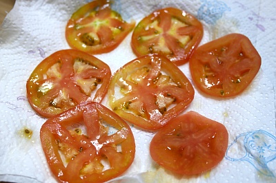 |
| 2. 돼지고기와 소고기는 1:1 로 준비 해서 맛술, 매실, 소금, 후추를 약간씩 넣고 밑간 해 주기. | 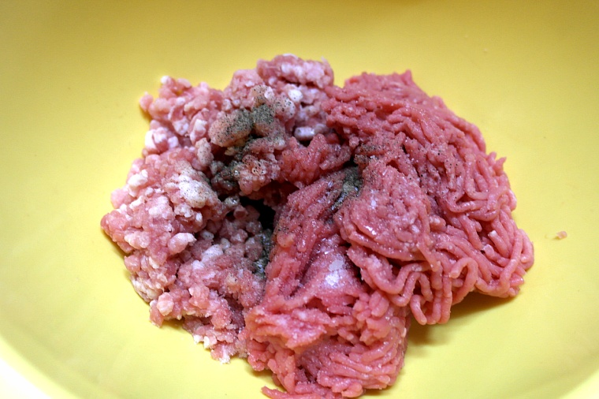 |
| 3. 야채 볶아 수분 날리기! 양파와 파프리카는 쎈불에 휙~ 볶아 수분을 날려주기. | 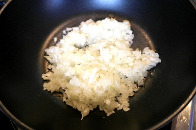 |
| 4. 밑간 된 고기에 볶음 야채, 빵가루 두세숟가락 (질기 정도에 맞춰) 넣어 반죽하기! | 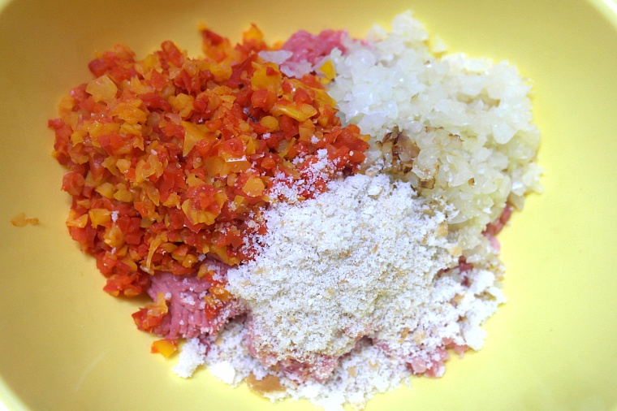 |
| 5. 볼에 재료를 모두 넣어서 고루고루 섞이도록 치대주기! 이때 빵가루를 이용해서 질기를 맞춰주면 되요! | 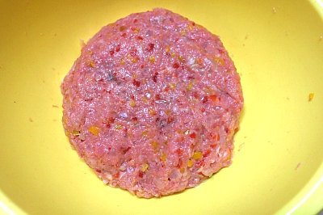 |
| 6. 다 섞여 잘 쳐진 패티는 동그랗게 모양 만들기 | 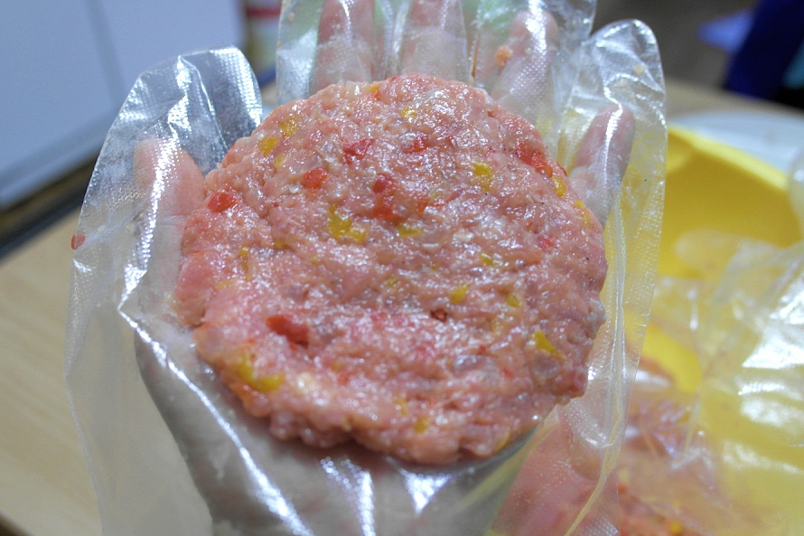 |
| 7. 하나씩 개별 포장 해서 놓으면 나중에도 또 쓸 수 있겠죠? | 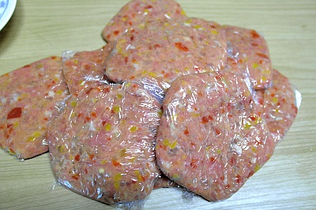 |
| 8. 패티는 기름 두른 팬에 앞뒤 골고루 구워주고, | 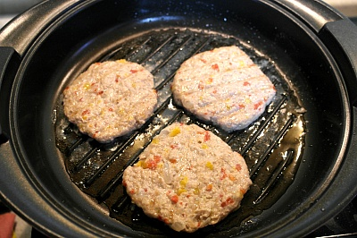 |
| 9. 빵도 앞 뒤 구워주기. 렌지에 살짝 돌리셔도 되요! | 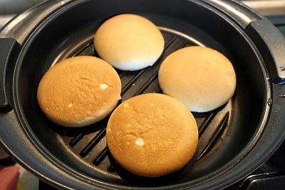 |
| 10. 다음은 소스 만들기! 간장6, 설탕4, 올리고당2, 물3 밥 숟가락으로 넣고 달달달달~~~~~~ 졸여주세요. 취향껏 짠맛, 단맛 가감 하기~~~ㅎㅎ 푹~~~ 졸이다 보면 걸죽하게 변해있을꺼예요. 그럼 불을끄고, 잠시 식혀두면 올리고당이랑 설탕이 들어가서 묽었던 소스가 걸죽하게 변해요, | 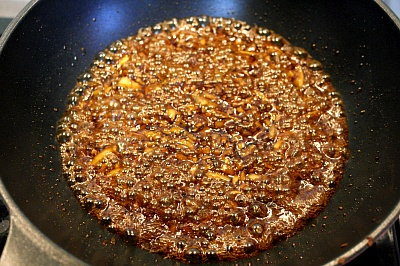 |
| 11. - 구운 빵에는 마요네즈를 발라주기. - 양상추도 올리고, - 토마토도 올리고, - 패티도 올리고 소스 발라주기. - 치즈 올리고, - 피클 올리고, - 소스 바른 빵을 위에 덥으면 끝! | 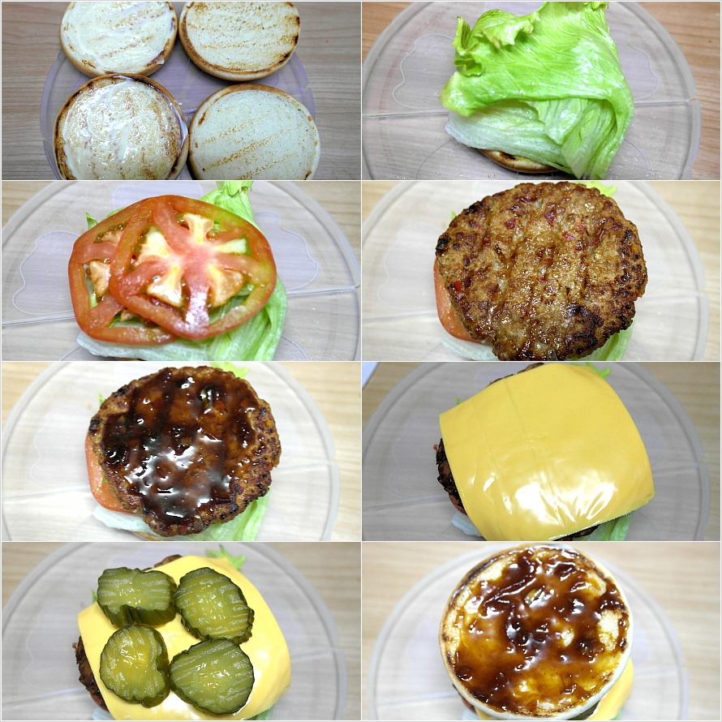 |
| 12. 쨔잔! 수제 햄버거 완성! 수제 햄버거의 매력은 역시 두둑한 패티죠? 한입에 안들어 갈 듯한 그 패티 ㅋㅋㅋ | 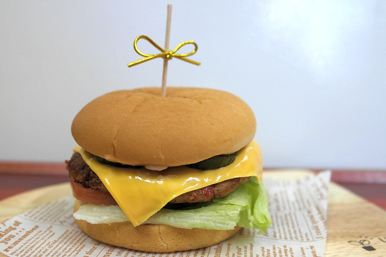 |